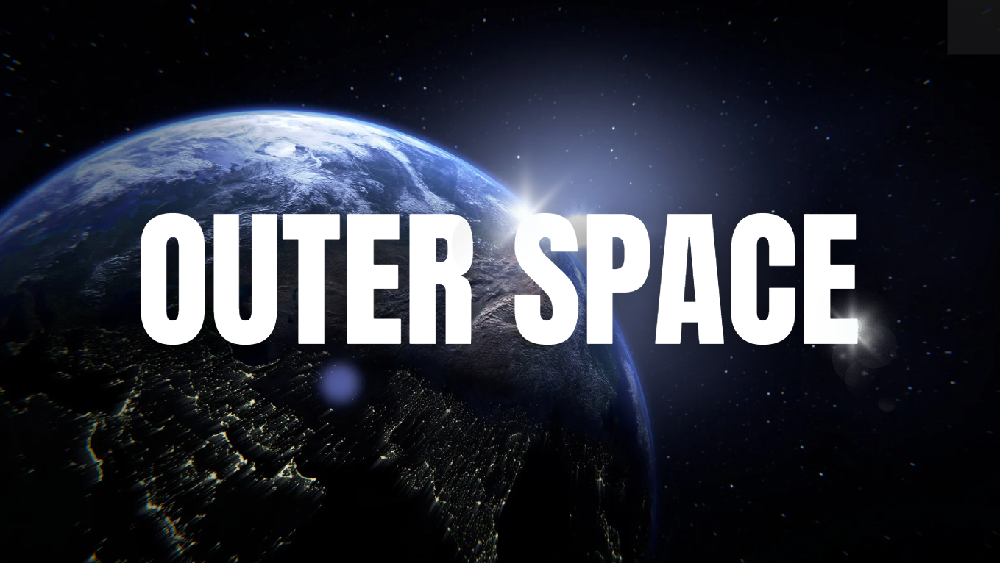

Wem gehört der Weltraum?
Oktober 2026

Die Schnittstelle | Technologie, Institutionen, Gesellschaft
Wem gehört der Weltraum?
Allen, niemandem oder denen, die einen Haufen Geld haben?
Ich habe einen lesenswerten Artikel von Antonio Ghezzi[1] gelesen, der so beginnt: „Es gibt eine Weide, die allen offensteht. Jeder Hirte im Dorf bringt seine Schafe dorthin. Irgendwann rechnet jeder für sich: Wenn ich meiner Herde ein weiteres Schaf hinzufüge, gehört der gesamte Gewinn mir, während die Kosten (ein bisschen weniger Gras) auf alle verteilt werden. Warum also nicht? Es lohnt sich. Es ist rational. Einer macht es, dann der Nachbar, dann alle. Und die Weide geht zugrunde. Das ist die ‚Tragödie der Allmende‘, die der Biologe Garrett Hardin 1968 in Science beschrieben hat. Heute liegt diese Weide einige hundert Kilometer über unseren Köpfen: im niedrigen Erdorbit. 1978 beschrieb der NASA-Wissenschaftler Donald Kessler die orbitale Variante dieser Tragödie und ihre Folgen. Jeder zusätzliche Satellit erhöht das Kollisionsrisiko. Jede Kollision erzeugt Trümmerteile; jedes Trümmerteil kann weitere Kollisionen auslösen. Ab einer bestimmten Dichte erhält sich die Kettenreaktion selbst, und ganze Orbitalbereiche werden für Jahrzehnte unbrauchbar. Das ist das sogenannte Kessler-Syndrom. (…) Die Weltraumwirtschaft bietet enorme Chancen, auch für Italien. Aber für jede gemeinsam genutzte Weide braucht es Regeln, bevor das Gras ausgeht – nicht erst danach.“
Beim Lesen von Ghezzis Artikel habe ich mich einmal mehr gefragt, wem der Weltraum gehört und wem er gehören sollte. Der Weltraumvertrag von 1967[2] weist den Staaten die Verantwortung für die Aktivitäten ihrer nationalen Akteure zu, darunter auch Unternehmen. Es gibt jedoch keine Behörde, die den Zugang zum Orbit koordiniert. Wer sollte also entscheiden, und mit welcher Legitimität? Wie lassen sich technische Vereinbarungen entwickeln, aus denen später verbindliche Regeln werden (Standards, Leitlinien für Weltraumschrott, Koordination zwischen Raumfahrtagenturen)? Im Moment ist die Lage ziemlich unübersichtlich: Es gibt alte, allgemein gehaltene und nicht durchgesetzte Vereinbarungen, Verträge, die nicht alle unterzeichnen, und widerstreitende Interessen[3]. Wer sich näher mit dem Thema beschäftigen möchte, findet am Ende des Artikels einige Quellen.
Was mir ziemlich klar erscheint: Ein freier, aber unregulierter Zugang führt tendenziell in die Katastrophe. Und damit wird die Frage zwangsläufig politisch: Wie weit können wir zulassen, dass private Interessen (durchaus legitime, versteht sich) – also das wirtschaftliche Interesse derjenigen, die mit der Nutzung eines gemeinsamen Raums Geld verdienen wollen – Vorrang vor der Notwendigkeit haben, diesen Raum allen zugänglich zu halten? Dabei geht es mir nicht nur um das moralische Recht, etwas Schönes genießen zu dürfen: einen Strand, einen Fluss, einen Berg, ein Meer, einen Wald. Solche Orte sollten allen gehören, und zwar in dem Sinne, dass alle das Recht haben sollten, sie zu geniessen. Wenn jemand diese Räume kauft und zu einer Quelle persönlichen Gewinns macht, nimmt er einem Teil der Menschen eine wichtige Möglichkeit. Hinzu kommt, dass die Nutzung oder der Genuss eines Raums allen genommen werden kann, wenn dieser durch wirtschaftliche Ausbeutung beschädigt oder unbrauchbar gemacht wird. Und dann gibt es noch einen dritten, weitaus ernsteren Punkt: Wenn wir akzeptieren, dass diejenigen, die über die finanziellen Mittel verfügen, einen Teil des Raums oder den Zugang dazu auszubeuten oder zu kontrollieren, diese Kontrolle an sich reissen und der Gemeinschaft entziehen dürfen, räumen wir ihnen zugleich das Recht auf eine wesentlich gefährlichere Form der Kontrolle ein.
Stellen wir uns jemanden vor, der bestimmte Satellitensysteme kontrolliert. Da der Orbit nicht unendlich viel Platz bietet – im Gegenteil, er ist ziemlich überfüllt –, müssen diejenigen, die die Satelliten nutzen wollen, dieser Person dafür bezahlen. Wer sich also dort mit dem Internet verbinden möchte, wo terrestrische Netze nicht hinreichen (auf See, im Flugzeug, in abgelegenen Gebieten oder in Kriegsgebieten), muss dafür bezahlen. Und die Person, die das Satellitensystem kontrolliert, kann jederzeit entscheiden, den Dienst nicht bereitzustellen, richtig? Schliesslich gehört ihr das Unternehmen, und der Gewinn gehört ihr: Wir haben ihr ja eine Lizenz erteilt, einen Teil des Orbits zu belegen und damit Geld zu verdienen! So entsteht eine Situation, in der ein Land von einer stärkeren Macht militärisch angegriffen werden könnte und sich vielleicht mit Drohnen verteidigen möchte, dafür aber auf eine kommerzielle Satellitenverbindung angewiesen ist. Und es könnte diese Drohnen nicht einsetzen, weil der Eigentümer des Satellitenunternehmens beschliesst, den Dienst nicht bereitzustellen – einfach, weil ihm die andere Seite sympathischer ist (was häufig bedeutet: „Sie kann mehr bezahlen“). Ich will das nicht dramatisieren, aber euch ist schon klar, dass eine Invasion nicht einfach nur einen Präsidentenwechsel zur Folge hat, oder? Ist euch bewusst, dass Krieg Tote fordert – oft Zivilisten, ältere Menschen und Kinder – und Massaker verursacht? Indem wir also entschieden haben, dass jemand mit seinem Raumfahrtunternehmen Geld verdienen können muss, haben wir ihm das Recht eingeräumt, darüber zu entscheiden, dass sich ein angegriffenes Land nicht verteidigen kann und dass ein angreifendes Land Menschen im anderen Land töten kann, weil es das Geld hat, die dafür benötigten Technologien zu kontrollieren. Aber hey, so ist eben der freie Markt, Baby.
- Artikel von Antonio Ghezzi auf LinkedIn: https://www.linkedin.com/feed/update/urn:li:activity:7515286679482494976/
- Weltraumvertrag von 1967, NASA: https://www.nasa.gov/history/SP-4225/documentation/cooperation/treaty.htm
-
Weiterführende Quellen:
- Büro der Vereinten Nationen für Weltraumfragen (UNOOSA), Dokumentation zum Weltraumrecht: https://www.unoosa.org/documents/pdf/spacelaw/sd/COPUOS.pdf
- NASA, Meldung zu den Artemis Accords und dem Überschreiten der Marke von 75 Unterzeichnern: https://www.nasa.gov/news-release/nasa-celebrates-as-artemis-accords-surpasses-75-signatories/
- Vertragssammlung der Vereinten Nationen, Vertragstext: https://treaties.un.org/doc/Publication/MTDSG/Volume%20II/Chapter%20XXIV/xxiv-2.en.pdf
Die Schnittstelle | Technologie, Institutionen, Gesellschaft